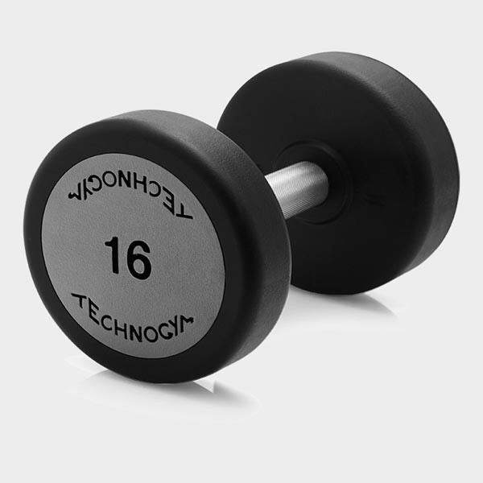
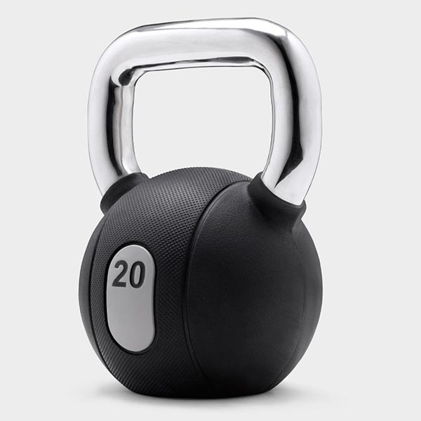
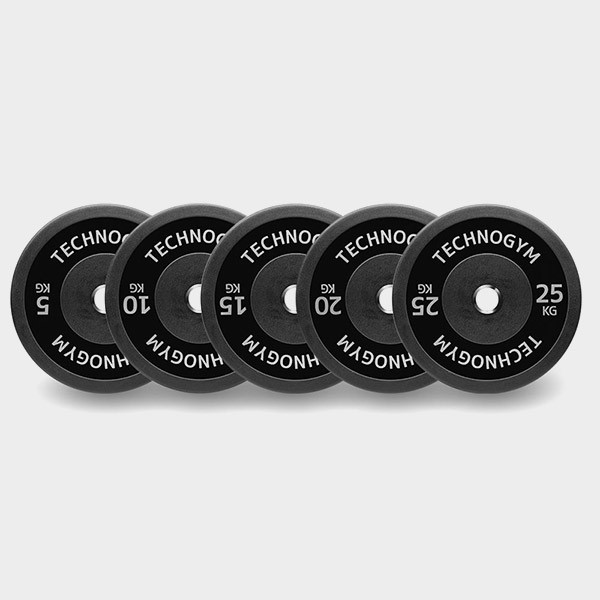
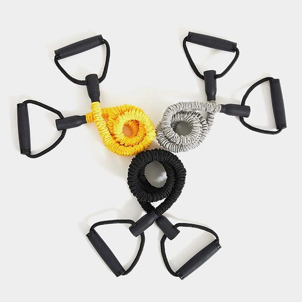

GYM MASTER
ACCESORIOS Y MAQUINAS PARA REALIZAR TODO TIPO DE EJERCICIO
Para disfrutar de todos estos beneficios es necesario contar con una bicicleta de spinning como las de Sport Fitness, que permite realizar ciclismo estático desde la comodidad del hogar. Está diseñada con una estructura que incluye ruedas pequeñas para poder trasladarla entre habitaciones, y un marco resistente para garantizar la estabilidad mientras es utilizada.El ejercicio cardiovascular es uno de los entrenamientos más importantes para bajar de peso. Con estos se pone en práctica un estilo de vida más saludable y además mejora la función cardíaca.
Trotar o correr con 18 niveles de inclinación. De la misma manera que otros equipos de ejercicios, cuenta con pantallas para indicar la velocidad, la distancia recorrida y las calorías perdidas.
Para aquellos que desean iniciar un programa de entrenamiento, esta cuenta con 25 proyectos para llevar a cabo y perder peso de una forma dinámica.
Otra opción para realizar ejercicios cardiovasculares para bajar de peso, son las trotadoras eléctricas; máquinas en las que se puede
Las bandas elásticas en 3 niveles de resistencia diferentes añaden variedad al entrenamiento y aumentan tu fuerza.
Marca abdominales. Modela los glúteos. Consigue un cuerpo más fuerte y estilizado. Deja que nuestros programas de entrenamiento te inspiren y consigue tus objetivos más rápido que nunca con Technogym Bench.
Unica Unica es un banco de musculación multifunción diseñado para entrenar la fuerza en casa: una solución completa, confortable y versátil en tan solo 5 metros cuadrados.
Más de 25 ejercicios para desarrollar la fuerza,
Máxima activación muscular,Comodidad y seguridad
UN ACCESORIO PARA CADA NECESIDAD
- Septiembre 2021
Mancuernas
15/09/2021
Agarre superior,seguro resistente,con un estilo elegante
KETTLEBELLS
15/09/2021
Elegantes pesas rusas para el entrenamiento funcional
Bumper Plates
22/07/2021
Amortiguación sistema de caidas y rebotes
Bandas Elasticas
21/06/2021
Ligeras y versátiles,son prácticas empuñaduras

Technogym es conocida en todo el mundo como "The Wellness Company" —una compañía que ha contribuido a desarrollar el concepto hedonístico de "fitness" hasta convertirlo en un verdadero estilo de vida: Wellness. Vivir el estilo de vida "Wellness" significa practicar actividad física con regularidad, mantener una nutrición correcta, y una actitud mental positiva.
La misión de Technogym es ayudar a las personas a vivir mejor. Y para lograr este objetivo ofrece los mejores equipos de gimnasio, servicios, contenidos y programas, todos ellos dotados de la tecnología necesaria para conectarse entre sí de manera que los usuarios puedan disfrutar del Wellness con independencia de donde estén: esa es la Wellness Connected Experience. De hecho, todo el mundo puede encontrar sus propios contenidos y programas de entrenamiento en cualquier equipo Technogym y en cualquier dispositivo personal.